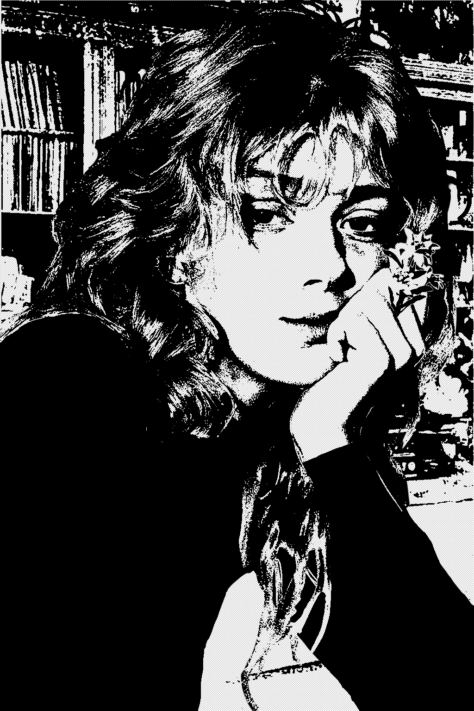

Rita Schmidt

About me!!
Hello, my name is Rita, I'm 22 and I live in West Berlin.
Just like the Beatles song, I'm actually a meter maid.
I believe in democratic socialism and I have family and friends that live on the other side
and every day I hope and pray that they'll come back to me soon.
I wish Germany could reunite again.
The Wall
My views on this wall
To me, the Wall is a statement of how opposite these two
ideologies are of each other. I think it's a monument that causes
pain to everyone on both sides, and I hate it. It's such an ugly
sight both literally and metaphorically. This wall makes me think
of Pyramus and Thisbe where I'm Pyramus and my dearest friend Lucille
is Thisbe.
Life on the Other Side
What my life is like as a West Berliner
I go out a lot with my friends on my days off,
and I like to walk around. Once on my walks, I found
a stray kitten with my friend Lucille. He's now my best
friend and his name is Chumps. He's fat and lazy. I also
go around and check parking meters as a job. It's alright, I guess.
I constantly think about my loved ones on the other side (not "death" other side)